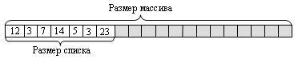
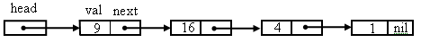
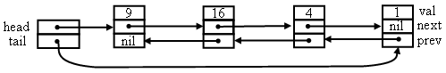
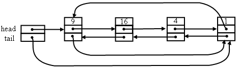
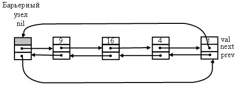
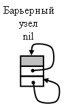
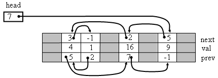
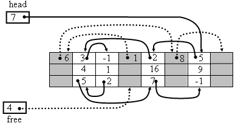

|
|
|
Список на базе односвязной структуры с адресными указателями Список на базе двусвязной структуры с адресными указателями Циклический список на базе связной структуры с адресными указателями Список на базе связной структуры с барьерным элементом Список на базе массива с индексными указателями
Список представляет позиционно–ориентированную, линейную последовательность с доступом к элементам по номеру позиции или по значению. Элемент списка хранит значение объекта, включённого в список. Номера элементов в списке задаются в линейном порядке, начиная со значения 0 или 1. У списка есть первый и последний элементы. У всех остальных элементов есть единственный предшествующий элемент (предшественник) и последующий элемент (преемник). Список имеет начало (голову), фиксирующую первый элемент, и конец (хвост), фиксирующий последний элемент. Для хранения списка используются либо массив элементов, либо связная структура элементов. Список на базе массива представляет собой последовательность значений, занимающую первые элементы массива Над списком и его элементами можно выполнять операции вставки - Insert, удаления - Delete, поиска заданных значений - Search, изменения значений элементов в произвольных позициях и другие. Для хранения списка используются либо массив элементов, либо связная структура элементов.
Список на базе массива представляет собой последовательность значений, занимающую первые элементы массива:  Размер массива, хранящего список, ограничивает предельный размер списка. Чтобы снять это ограничение, можно организовать хранение списка на базе надёжного массива, который может изменять свой размер в зависимости от его заполнения элементами списка. К достоинствам хранения списка в массиве можно отнести прямой доступ к элементам списка по номеру для записи и чтения, поскольку номер позиции в списке совпадает с индексом в массиве. Но при вставке и удалении элементов приходится выполнять сдвиг последующих элементов в списке на одну позицию вправо или влево. Поэтому трудоёмкость операций вставки и удаления элементов имеет оценку O(n), операции доступа к элементам по номеру позиции - оценку O(1). Альтернативной формой хранения списка является связная структура элементов. Каждый элемент списка хранит отдельное значение и указывает на своего преемника и, возможно, предшественника. Связную структуру можно построить с использованием элементов, связанных адресными указателями или на базе массива с индексными указателями. Обе формы обеспечивают только последовательный доступ к элементам, вследствие чего все операции для элементов списка имеют трудоёмкость O(n).
Список на базе односвязной структуры с адресными указателями Связные структуры на базе адресных указателей представляют собой множество элементов, ссылающихся друг на друга с помощью адресных указателей. Каждый элемент структуры размещён в динамической памяти и называется узлом списка. Узел структуры состоит их двух частей – значения ( val) и указателей на соседние узлы структуры. Узел односвязной структуры содержит один указатель на следующий узел (next). Ввиду этого, в односвязном списке возможен проход только в одном направлении – от начала списка к его концу. Начало списка фиксируется в отдельном указателе - head. 
Рассмотрим алгоритмы основных операций для списка: Операция поиска значения v в списке L:Search( L, v)
Операция вставки значения v в указанную позицию - n односвязного списка L:Insert (L, v, n)
Операция удаления значения из позиции n односвязного списка L:Delete (L, n)
Список на базе двусвязной структуры с адресными указателями Узел двусвязной структуры содержит указатели на предыдущий (prev) и следующий (next) узлы (на предшественника и преемника в списке) и в двусвязном списке возможен проход в обоих направлениях, от начала списка к концу и от конца к началу. В двусвязном списке заголовок списка состоит из двух указателей на первый и последний элементы.  Операция вставки значения v в указанную позицию - n двусвязного списка L:Insert (L, v, n)
Циклический список на базе связной структуры с адресными указателями Существуют разновидности связных списков, ориентированные на специфический режим использования. Например, система разделения времени хранит задания в очереди, построенной на базе связного списка. Система просматривает список от начала до конца, выделяя при этом каждому заданию ресурсы компьютера на конечный квант времени. При достижении конца очереди система возвращается к первому заданию в очереди и начинает новый цикл обслуживания. Для таких систем необходим логически замкнутый в кольцо список элементов, который можно построить на базе кольцевой связной структуры. 
Список на базе связной структуры с барьерным элементом В связных структурах списков приходится обрабатывать особые ситуации при вставке или удалении элементов в начало или конец списка. Чтобы избавиться от этих ситуаций и тем самым ускорить выполнение операций вставки и удаления используется кольцевая структура с барьерным, головным узлом [5]. Он существует в структуре всегда, даже если список пуст. Последний узел в непустом списке указывает на барьерный узел. Таким образом, структура всегда замкнута в кольцо. Благодаря этому в любой момент времени производится вставка или удаление какого-либо звена кольца по одной и той же схеме. 
Барьерный элемент не позволяет выходить за пределы списка. Его адрес играет роль значения nil. Так как указатель на первый элемент списка хранится в поле next[nil[L]], то переменная – указатель head[L] становится лишней. Пустой список будет кольцом, в котором nil[L] – единственный элемент, указывающий сам на себя. 
В операции Search нужно заменить nil на nil[L], а head[L] на next[nil[L]].
List_Search (L, v)
Операция вставки значения v в позицию n списка с барьерным элементом L:Insert (L, v, n)
Введение барьерного элемента не уменьшает вычислительную сложность операций, но упрощает их программирование. Если эти операции над списком используются в глубоко вложенном цикле программы, то можно ускорить выполнение программы в несколько раз. Но если программа использует множество коротких списков, введение фиктивных элементов может привести к существенной потере памяти. Поэтому без необходимости не стоит применять фиктивные элементы.
Список на базе массива с индексными указателями У списков, использующих связную структуру на базе адресных указателей, есть один существенный недостаток – интенсивное использование механизма распределения динамической памяти при вставке и удалении элементов. Если при работе со списком операции вставки и удаления выполняются часто, то это существенно замедляет работу программы, использующей такой список. В случае, когда заранее известен предельный размер списка, можно использовать связную структуру на базе массива с индексными указателями, свободную от этого недостатка [3]. Связная структура представляет собой массив записей, поля которых соответствуют полям узла структуры с адресными указателями. Либо можно использовать несколько массивов, по одному для каждого из полей. В структуре адресные указатели заменяются индексами следующего и предыдущего элементов.  Голова списка представляет собой переменную, содержащую индекс позиции массива, в которой помещён первый элемент списка. По ходу работы со списком, в результате вставок и удалений элементов в массиве образуются перемежающиеся свободные и занятые позиции. При добавлении нового элемента в список для него нужно выделять свободную позицию в массиве. Свободные позиции связываются в дополнительный односвязный список, используя поле индекса следующего элемента. Голова списка свободных позиций размещается в дополнительной индексной переменной. Список свободных позиций находится вперемешку со списком занятых позиций.  Список свободных позиций используется, как стек. При вставке элемента в список для него выбирается первая позиция из списка свободных позиций и при удалении элемента списка, освобождающаяся позиция помещается в начало списка свободных позиций. При создании списка все позиции в массиве свободны и связаны в список свободных позиций. |
|
|